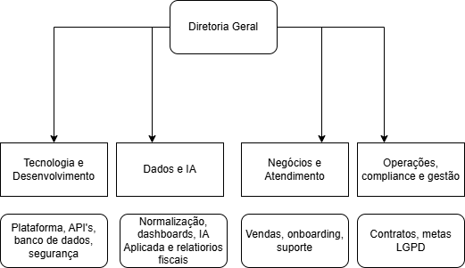
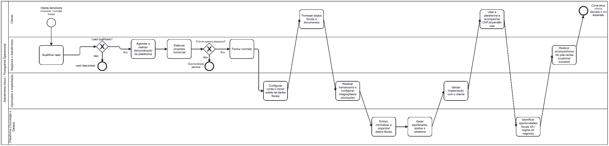
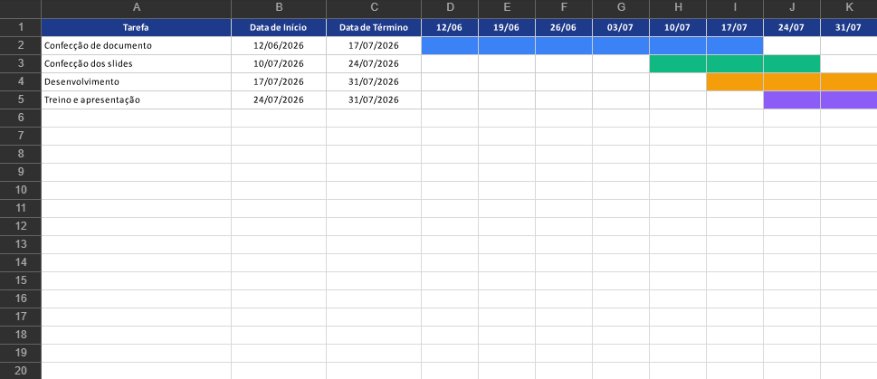

Criação de Empresa Júnior
Inloco
Serviços personalizados e tecnologia própria para inteligência fiscal.
André, Breno e Enzo
Disciplina de Empresa Júnior
Brasília, 2026
Quem somos
Soluções sob medida para alta complexidade fiscal
A Inloco desenvolve automações, integrações e ferramentas personalizadas para escritórios e empresas. A plataforma própria acelera cada entrega.
Tax Tech B2B
Serviços especializados
Tecnologia própria
Problema
Dados fiscais ainda vivem espalhados
Portais governamentais
Planilhas
Documentos dispersos
Trabalho manual
Baixa visibilidade
Risco de perder oportunidades
Nossa solução
Serviço especializado com tecnologia por trás
ClienteDor específica
DiagnósticoFluxos e dados
SoluçãoFerramenta sob medida
IntegraçãoFontes autorizadas
InteligênciaAutomação e IA
OperaçãoDecisão fiscal
Área de atuação
Mercado B2B com alta complexidade fiscal
Distrito Federal
Impacto para negócios locais
A receita dos projetos complexos financia acesso, capacitação e organização digital para pequenos negócios do Distrito Federal.
Grandes clientesProjetos personalizados geram receita.
MEIs do DFAcesso gratuito ou subsidiado.
OficinasConhecimento fiscal e tecnológico.
ComunidadeImpacto financiado pelo negócio.
Planejamento estratégico
Escala gradual, guiada por validação real
- ConcluídoValidação com cliente
- Meses 1-2Marketing e posicionamento
- Meses 2-4Aquisição de clientes
- OnboardingImplantação estruturada
- Meses 4-8Escala dos serviços e da plataforma
- Meses 8-18Novas soluções fiscais
Estrutura organizacional
Equipe enxuta com quatro frentes de responsabilidade

Portfólio
Serviços personalizados são o principal negócio
Serviços especializados
Soluções sob medidaDados fiscais organizadosAutomação de processosIntegração entre sistemasImplantação personalizadaInteligência para escritóriosPlataforma própria
DashboardGestão de informaçõesMonitoramentoIACentralização dos dadosPrograma Inloco MEI Digital
Conhecimento fiscal devolvido à comunidade
O programa é financiado pelos serviços aos grandes clientes e oferece acesso gratuito ou subsidiado à plataforma para MEIs.
IA especializadaResponde dúvidas comuns de microempreendedores.
Organização digitalAcompanha documentos, obrigações e rotinas.
Educação práticaMateriais, capacitações e orientação acessível.
FinanciamentoReceita comercial sustenta o impacto local.
Inloco Comunidade Tech Fiscal
Fortalecendo o ecossistema de inovação do DF
Comunidade Tech Fiscal
Oficinas e workshops
Palestras gratuitas
Formação de estudantes
Universidade e mercado
Empreendedorismo tecnológico
Plano de marketing
Relacionamento profissional e prova de valor
LinkedIn
Site
Conteúdo técnico
Networking
Eventos
Indicações
Cases de sucesso
Plano operacional
Da demanda ao acompanhamento do cliente
DiagnósticoPropostaImplantaçãoTreinamentoOnboardingSuporteAcompanhamento

Análise de mercado
O maior concorrente ainda é o processo manual
Tecnologia e inovação
Tecnologia própria para acelerar projetos sob medida
SupabaseCloudAPIsBanco de dados
Inteligência artificialAutomaçõesSegurançaMonitoramento
Plano financeiro
Modelo financeiro conecta crescimento e impacto social
Grandes escritóriosAlta complexidade
Soluções personalizadasContratos sob medida
Receita recorrenteServiços financiam a operação
InvestimentoProduto, marketing e infraestrutura
MEI DigitalPlataforma e IA subsidiadas
OficinasCapacitação gratuita da comunidade
Resultados esperados
Crescimento empresarial que amplia impacto no Distrito Federal
Mais projetos personalizados
Mais MEIs atendidos
Mais oficinas realizadas
Tecnologia fiscal democratizada
Estudantes próximos do mercado
Pequenos negócios fortalecidos
Inovação fiscal no DF
Cronograma
Preparação final até 31/07

Transformando dados fiscais em inteligência.
André, Breno e Enzo
Criação de Empresa Júnior
Canais digitais e demonstrações da Inloco